Заливка бетона: монолитные стены, несъемная опалубка.

В индивидуальном строительстве применяются не только мелкоблочные материалы. Стены можно возвести и в виде монолита из легких бетонов. Преимущества таких технологий заключаются в том, что они достаточно просты и могут использоваться застройщиком даже при отсутствии большого опыта, обходятся довольно дешево и при этом отличаются хорошими эксплуатационными характеристиками.
Заполнителями в легких бетонах выступают шлак, кирпичный бой, керамзит, опилки и различные местные материалы, связующими – цемент, известь, гипс, глина. Чаще всего в качестве заполнителя используется топливный или доменный шлак, для увеличения прочности которого добавляется примерно 10–20 % от его объема песка.
Как песок, так и шлак не должен содержать никаких примесей: глины, грунта, золы и пр. Прочность и теплоизоляционные свойства шлакобетона в немалой степени определяются его гранулометрическим составом – соотношением крупных (5–40 мм) и мелких (0,2–5 мм) фракций заполнителя. Если преобладают крупные частицы, то шлакобетон получается легким, но недостаточно прочным; если большую часть заполнителя составляет мелкий шлак, то шлакобетон будет не только более плотным, но и более теплопроводным. Исходя из этого, опытным путем установлено, что для наружных стен оптимально соотношение мелкого и крупного шлака – от 3: 7 до 4: 6; для внутренних несущих стен, в которых более важным показателем является прочность, пропорции сдвигаются в сторону мелких фракций. Более того, частицы размером более 10 мм в смесь не вводятся вообще.
Основным связующим является цемент, в который добавляется глина или известь. Это позволяет не только сэкономить дорогой материал, но и улучшить качество шлакобетона, который благодаря добавкам приобретает пластичность.
В табл. 8 представлены компоненты для приготовления шлакобетона.
Таблица 8
Соотношение компонентов в составе шлакобетона
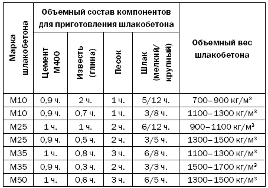
Перед приготовлением шлакобетона заполнитель надо пропустить через сита с ячейками 5 x 5 и 1 x 1 мм. Шлак, оставшийся на первом, относится к крупным, на втором – к мелким. Соединив 60–70 % крупной фракции с 30–40 % мелкой, можно переходить к дальнейшим действиям.
Чтобы приготовить шлакобетон, цемент, песок и шлак (крупные фрагменты надо увлажнить) тщательно перемешиваются в сухом состоянии, потом добавляются известковое или глиняное тесто и вода. Состав еще раз перемешивается и может сразу же использоваться. При этом необходимо такое количество смеси, чтобы ее можно было израсходовать в течение не более 2 ч.
Для выполнения монолитной стены необходимо сделать опалубку высотой 40–60 см, доски которой следует хорошо подогнать, иначе цементное молоко просто вытечет. Для опалубки подойдут как строганые, так и нестроганые доски. Первые – в том случае, если дальнейшая отделка стен не предполагается, вторые – если поверхности будут оштукатурены.
Удобнее всего воспользоваться переставной опалубкой (рис. 79), выполненной из горизонтальных деревянных щитов и стяжек или вертикальных металлических щитов и стержней.
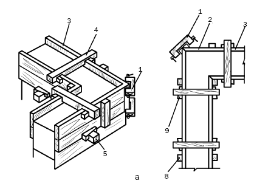
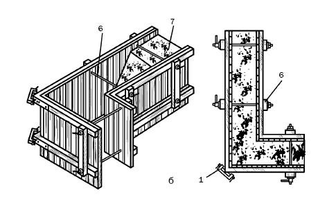
Рис. 79. Конструкция переставной опалубки: а – деревянной;
б – металлической; 1 – струбцина; 2, 3 – горизонтальные наружные и внутренние щиты; 4, 5 – верхняя и нижняя деревянные стяжки; 6 – металлическая стяжка; 7 – шлакобетон; 8 – вертикальный брус; 9 – клинья
Толщина монолитных стен равна 550–650 мм. Если в качестве заполнителя применяются керамзит или пемза, стенка может быть и тоньше – 450–500 мм.
Подготовленная и установленная опалубка послойно заполняется шлакобетоном (примерно 150–200 мм), после чего уплотняется и штыкуется, чтобы удалить из материала воздух, который может образовать в массиве стены карманы и нарушить ее прочность.
Примерно через 2–3 дня (в зависимости от погоды) опалубка разбирается и монтируется на другом месте. Возведенный участок стены нуждается в уходе, который состоит в защите от солнечных лучей и увлажнении.
К окончательной отделке стены можно приступить через 3–4 недели, дождавшись, пока шлакобетон полностью отвердеет и наберет прочность.
С внешней стороны стены оштукатуриваются или отделываются другими современными материалами. Неплохим технологическим решением нужно признать облицовку стен кирпичом.
Будучи выполненной с расшивкой швов, кирпичная стена не только придаст монолиту более эффектный вид, но и может служить опалубкой в процессе бетонирования.
Перемычки над оконными и дверными проемами в силу специфики материала стен выполняются рядовыми из монолитного железобетонного пояса толщиной 300–400 мм, укладывающегося по деревянной опалубке. При этом опорные части перемычек имеют длину 400–500 мм с обеих сторон проема.
Монолитные стены, как и мелкоблочные, могут выполняться с пустотами. Это имеет ряд плюсов: прежде всего уменьшается расход строительного материала и повышаются теплоизоляционные свойства ограждающей конструкции.
В качестве пустотообразователей выступают вкладыши из легкого бетона, пенополистирола и др. Чтобы пустоты не снизили прочность стены, плотность шлакобетона следует повысить.
Возведение стен обойдется дешевле (на 30–40 % по сравнению со шлакобетонными и в 2–3 раза по сравнению с кирпичными), если использовать отходы деревообрабатывающей промышленности, в частности опилки (табл. 9). Дополнительно рекомендуется вводить хлористый кальций, жидкое стекло и др. (примерно 2–4 % от объема вяжущего).
Таблица 9
Соотношение компонентов в составе опилкобетона
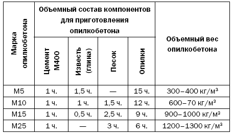
Опилкобетонный состав готовится следующим образом: по отдельности просеянные через сито с ячейками 1 x 1 см опилки смешиваются с песком, а цемент – с известковым тестом, после чего смеси соединяются, перемешиваются, выкладываются в опалубку слоями толщиной 10–15 см, после чего штыкуются, уплотняются и оставляются на 2–3 дня.
Стены из опилкобетона легкие, экологичные, отличаются низкой теплопроводностью, достаточно долговечные, особенно если предпринять для этого некоторые меры, в частности обеспечить гидроизоляцию фундамента, увеличить свес кровли до 600 мм. Прочность стен повысится, если их армировать металлическим прутком через 30–40 см по высоте в двух – трех местах по ширине стены (наибольшее внимание следует уделить местам примыкания и пересечения наружных и внутренних стен); на уровне перекрытия выполнить обвязку из досок сечением 150–200 x 50 мм с заделкой концов в полдерева; оконные проемы размещать на расстоянии не менее 1,5 м от углов; выполнять простенки шириной не менее 1 м; перемычки над оконными и дверными проемами заделывать в стены, предварительно изолировав, на глубину не менее 250 мм.
Толщина наружных опилкобетонных стен зависит от средней температуры самой холодной пятидневки в году. Если она составляет –20 °C, то достаточно 350 мм, при –40 °C – 400 мм. Толщина внутренних стен – 300 мм.
В порядке информирования
Выше мы представили традиционный способ возведения монолитных стен. Но современные технологии ушли далеко вперед, более того, они сейчас находятся на таком уровне, который позволяет архитекторам и дизайнерам не только принимать, но и реализовывать самые смелые решения, в частности совершенно не обязательно, чтобы дом выглядел скучной серой бетонной коробкой. Новые опалубочные конструкции дают возможность «ломать» фасад, придавать ему особую архитектурную выразительность.
Кроме того, монолитный дом строится очень быстро, особенно если снимается проблема с подачей раствора на строительную площадку и используется современная опалубочная конструкция. Кстати, надо заметить, что необходимости в ее приобретении нет.
Такие устройства можно арендовать, если вы планируете вести строительство собственными силами, или нанять бригаду, у которой есть опалубочная система. Но очень важно, какой именно опалубкой они владеют, поскольку от этого зависят и сроки возведения стен, и их качество, и то, в какую сумму обойдется дом.
Мировые лидеры по изготовлению опалубочных систем – немецкие производители, например фирма PERI, работающая в этой области с 1970-х гг. Опалубка Trio – одна из лучших ее разработок, которая отличается универсальностью и используется для строительства объекта любой сложности. Опалубка представляет собой оцинкованную с обеих сторон стальную раму с нанесенным на нее специальным порошковым покрытием, благодаря которому она легко очищается после распалубки. Рама обшита финской фанерой толщиной 18 мм. Монтаж системы, состоящей из шести типоразмеров щитов (30, 60, 72, 120, 240 см), которые могут собираться в вертикальном и горизонтальном положении, осуществляется с помощью универсального (подходит для всех соединений) замка BFD. Конструкция имеет высоту 540 см, но при сборке не потребует никаких ригелей – достаточно на ребра жесткости установить этот замок (рис. 80).
На поверхность опалубки путем распыления наносится специальная смазка (периклин или перибиоклин), благодаря которой стыки максимально хорошо подгоняются и стены получаются выровненными. Помимо этого, смазка облегчает очистку конструкции после распалубки (моментально отходит прилипший бетон, обрызганный таким составом). В течение семи дней смазка испаряется с поверхности стены, поэтому не является препятствием для ее отделки.
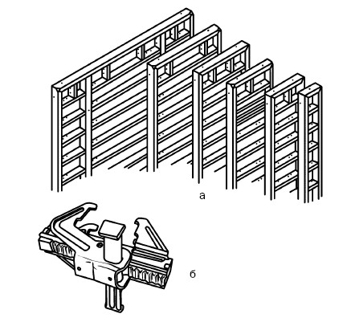
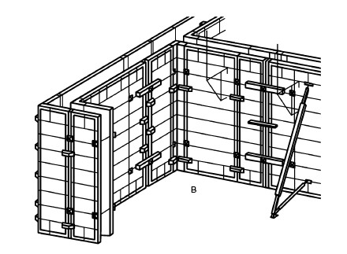
Рис. 80. Опалубка Trio: а – элементы опалубки; б – универсальный замок BFD; в – фрагмент смонтированной опалубки
Неплохо себя зарекомендовала итальянская опалубочная система Faresin, которая располагает большим количеством модулей и позволяет создавать практически неограниченное число разнообразных строительных конструкций, причем для ее монтажа не требуются высококвалифицированные специалисты. В данной конструкции оптимально сочетаются показатели жесткости, прочности и веса.
Каркас выполнен с высокой точностью из стальных и алюминиевых профилей, щиты – из ламинированной фанеры толщиной 18 мм. Собранная алюминиевая конструкция весит 28–32 кг/м , стальная – 40–45 кг/м . Два человека с помощью крана монтируют опалубку за 27 мин.
Отечественные опалубочные системы вполне конкурентоспособны и отличаются доступной ценой, например опалубка СТАЛФОРМ из стальных и алюминиевых модулей высотой 3 и 3,3 м с ламинированной фанерой и весом 30 и 50 кг/м соответственно.
Для того чтобы дом отвечал всем требованиям по теплосбережению, уровню комфорта, архитектурной выразительности, разрабатываются новые технологии, внедряются современные материалы. Если говорить упрощенно, то технология монолитного строительства осуществляется так: на площадке, отведенной под дом, по контуру стены будущего строения монтируется опалубка, в которую устанавливается каркас из арматуры и заливается бетон. Когда он наберет необходимую мощность, опалубка или демонтируется, или становится частью только что возведенной стены. Во втором случае она называется несъемной. Ее перспективность уже не вызывает сомнений.
Способ возведения стен с применением несъемной опалубки – это гибрид двух технологий: монолитного домостроения и строительства стен из пустотных блоков или панелей. Поэтому неудивительно, что весь процесс состоит из тех же этапов, за исключением последнего (опалубка остается на месте):
1) возведение стены из блоков или панелей;
2) армирование;
3) заполнение бетоном внутренних пустот.
Блоки и панели играют роль опалубки, которая потом не демонтируется, а превращается в многослойную ограждающую конструкцию. По данной технологии, получившей в европейских странах широкое распространение, строятся жилые дома, хозяйственные и небольшие промышленные здания (как правило, не выше пяти этажей).
Отличительными особенностями несъемной опалубки являются небольшой вес элементов, простая технология и отсутствие необходимости в применении тяжелой техники.
В настоящее время наибольшую известность получили несъемные опалубки из пенополистирола, хотя есть и другие технологии с использованием, например, ДСП, ЦСП и др. Рассмотрим некоторые из них.
«ИЗОДОМ» – это технология, доказавшая свою надежность и прошедшая проверку временем. В соответствии с ней несъемная опалубка изготавливается из строительного пенополистирола, который был изобретен еще в 1951 г. в Германии. Практически сразу его начали применять в качестве теплоизолятора для утепления наружных стен (на 97 % состоит из воздуха).
В начале 1960-х гг. была разработана и внедрена технология, согласно которой из пенополистирола стали делать опалубку в виде блоков, установленных на строительной площадке и залитых жидким бетоном. Этот способ заменил собой утепление стен пенополистирольными плитами (хотя он по-прежнему применяется для теплоизоляции уже построенных зданий). С течением времени пенополистирольные блоки модернизировались, усовершенствовались и в конечном итоге превратились в удобные, прочные, технологичные конструкции, которые позволяют реализовать любое архитектурное решение.
Несъемная опалубка «ИЗОДОМ» – это блоки (рис. 81), выполненные из твердого пенополистирола, со сквозными пустотами. На их поверхности имеется специальная система замков, которая обеспечивает герметичность конструкции и предотвращает потери бетона. Монтаж модулей осуществляется без каких-либо усилий, тем более что блоки длиной 1,5 м практически невесомы.
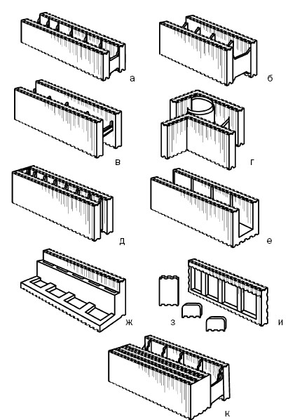
Рис. 81. Блоки системы «ИЗОДОМ»: а – стеновой блок МС2;
б – стеновой блок МС1; в – стеновой блок MCF1; г – поворотный блок MCF0,7; д – блок для внутренних стен MCF1/15; е – блок над проемами ML; ж – блок под перекрытия МР; з – блок МН; и – заглушки ОС, ОН, ОВ; к – блок с повышенной теплоизоляцией
Стеновые блоки МС – это две стенки из пенополистирола толщиной 50 мм, связанные перемычками, которые выполняются из пенополистирола толщиной 6,5 см или из твердого полистирола. Последние отличаются повышенной прочностью и применяются при постройке зданий до четырех этажей, но подходят и для малоэтажных зданий и в этом случае допускают применение низкомарочного бетона. На внутренних поверхностях блоков имеются пазы в виде «ласточкиного хвоста», благодаря которым бетон прочно сцепляется со стенками блока.
Если в проекте дома предполагается возведение стен под тем или иным углом (не под прямым), то для этого предназначается поворотный стеновой блок.
Блок ML монтируется над оконными и дверными проемами в качестве перемычки. С помощью модуля МН корректируется высота при установке оконных и дверных блоков, размеры которых не кратны 25 см.
Блок МР используется при монтаже междуэтажных перекрытий. Если требуется закрыть отверстия в торцах блока МС в угловых соединениях или в оконных либо дверных проемах, то применяются заглушки ОН и ОВ. Подобную роль играет элемент ОС, перекрывающий торцы блоков МС в тех случаях, когда из них выкраиваются блоки нестандартной длины.
Благодаря модулям МН, ОС, ОН, ОВ система «ИЗОДОМ» становится почти безотходной (есть системы, дающие 30 % отходов). Таким образом, комплект элементов настолько разнообразен, что позволяет строить здание независимо от его архитектурной сложности.
Чтобы понять преимущества технологии «ИЗОДОМ», будем рассуждать следующим образом. Несущие стены дома должны обеспечивать надежную теплоизоляцию. С одной стороны, если стена не оснащается каким-либо утеплителем, то материал, из которого она возводится, должен иметь высокие звуко– и теплоизоляционные свойства. В наибольшей степени этим обладают пористые материалы. Но такой материал не предназначен для больших нагрузок. Чтобы увеличить прочность, следует сократить количество пор в его структуре, что приведет к снижению теплоизоляционных свойств.
С другой стороны, для сохранения этих свойств нужно увеличить толщину стен, на что потребуются дополнительные строительные материалы, а это сопряжено с расходами. Но ведь можно, не увеличивая толщину стен, покрыть их с обеих сторон пенополистиролом. Тогда стена сохраняет необходимую прочность и не проигрывает в плане теплосбережения. В этом и состоит суть технологии «ИЗОДОМ».
Пенополистирол толщиной 50 мм обладает такой же теплопроводностью, как бетонная стена толщиной 2,5 м (понятно, что строить дома с такими стенами невозможно). Если бетон заключен в оболочку из пенополистирола, то стена защищена от колебаний температуры, температурных расширений, приводящих к трещинообразованию, и т. п. Стены с несъемной опалубкой хорошо прогреваются и поддерживают температуру внутри помещения, чем выгодно отличаются от кирпичных, которые быстро остывают и для прогрева которых требуются значительные энергетические затраты.
Итак, стены с пенополистирольной опалубкой имеют следующие параметры:
1) толщина стены – 250 мм; из них бетон – 150 мм, пенополистирол – 100 мм (в разных сериях представлены стены другой толщины);
2) вес – 280–300 кг/м ;
3) расход бетона М200 – 125 л/м ;
4) коэффициент теплопроводности (без учета отделки) – 0,036Вт/м*К (такую теплопроводность будет иметь кирпичная стена толщиной 150 см, керамзитобетонная – 199 см, газобетонная – 178 см, брусчатая – 53 см);
5) огнестойкость – I степень (предел – 2,5 ч). Пенополистирол относится к самозатухающим материалам, т. е. при пожаре он оплавляется, не распространяет пламя, не выделяет опасных веществ;
6) звукоизоляция – 46 дБ;
7) влагопоглощение – менее 2 %.
К этому добавим, что стены:
1) легко и быстро (в 10 раз быстрее, чем кирпичные) монтируются. За трое суток два человека строят дом площадью 100 м ;
2) отличаются небольшим весом (1 м готовой стены весит 280–320 кг), значит, экономятся средства на заложение фундамента;
3) распиливаются в соответствии с проектом;
4) оснащены каналами для армирования;
5) не имеют мостиков холода;
6) экологичны (из пенополистирола изготавливаются одноразовая посуда, упаковка для пищевых продуктов), долговечны, не поражаются вредными микроорганизмами, грибами, не повреждаются грызунами;
7) экономичны (затраты на оплату строителей на 60 % ниже, чем при кирпичной кладке; стоимость 1 м на 30 % ниже стоимости такого же размера кирпичной стены; транспортировка материалов обойдется в 3–4 раза дешевле, так как весь комплект можно привезти за одну поездку; примерно в 3–3,5 раза уменьшаются затраты на отопление при эксплуатации дома);
8) не пропускают и не поглощают влагу, но могут впитывать водяные пары из воздуха;
9) не утрачивают и не изменяют своих свойств при низких температурах;
10) из-за разницы в толщине увеличивают полезную площадь внутренних помещений, например при площади дома 100 м дополнительная составит 14–15 м , причем без ухудшения прочностных и теплоизоляционных характеристик;
11) сочетаются с любыми отделочными материалами.
Монтаж опалубки «ИЗОДОМ» настолько прост, что с ним справится и непрофессионал.
Блоки устанавливаются непосредственно на фундамент (междуэтажное перекрытие), который выровнен и уже гидроизолирован (самым элементарным образом накрыт гидроизолом, двумя слоями рубероида или полиэтиленовой пленки). Предпочтение отдается ленточному фундаменту или монолитной железобетонной плите.
Первый ряд блоков занимает свое место по всему периметру, сквозь полости в них пропускается вертикальная арматура, закрепленная в фундаменте, далее монтируется горизонтальная (для этого имеются специальные пазы). В первом ряду очень важно правильно разместить все отводы. Электропроводка, вентиляционные каналы и другие коммуникации прокладываются до бетонирования стены.
Второй ряд монтируется как в кирпичной кладке, с перевязкой швов, т. е. со смещением 250 мм, что придает стене устойчивость. Для соединения пенополистирольных блоков следует нажать на кромки, чтобы защелкнулись замки. Третий ряд выравнивает все уровни блоков. Все сказанное иллюстрируется рис. 82.
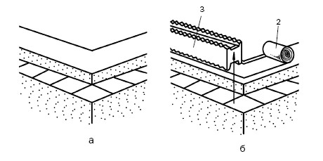
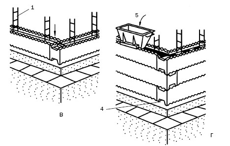
Рис. 82. Монтаж несъемной опалубки «ИЗОДОМ»: а – фундамент; б – установка стенового блока; в – подрезка блока и установка заглушек; г – заполнение блока бетоном; 1 – арматура; 2 – гидроизоляция; 3 – стеновой блок; 4 – заглушка; 5 – воронка
В блоках необходимо предусмотреть проемы под окна и двери. В местах проемов под них в блоках образуются отверстия, заглушаемые деталями ОВ и ОН. В этих же рядах устанавливаются перемычки, которые окончательно оформляют проемы. Чтобы не допустить проседания проемов, под них подставляются вертикальные подпорки, их потом легко можно вынуть.
После того как опалубка смонтирована, ее заполняют бетоном (М200, с максимальным размером гравийного зерна 12–14 мм для осуществления перекачки смеси насосом; для двухэтажного коттеджа: цемент М400, песок, щебень фракций 5–20 мм (1: 3: 5)), причем в первую очередь заливаются углы и крайние части отверстий, потом остальные стены. Чтобы освободить бетон от воздуха, его штыкуют и уплотняют.
Если после укладки первой порции бетона прошло 6 ч, то перед очередным этапом его поверхность надо очистить от цементного молочка, которое проступило как стекловидная пленка, и увлажнить. Чтобы новый
Опалубка герметична, что препятствует отведению лишней жидкости. Поэтому состояние бетонной массы и количество воды в ней необходимо контролировать. Для обеспечения пластичности бетонного раствора в него могут вводиться пластификаторы.
Насос, с помощью которого бетон подается в опалубку, должен иметь шланг с наконечником из трубы диаметром не более 100 мм. Чтобы снизить скорость подачи бетона и не допустить нарушения геометрических параметров конструкции, рекомендуется придать наконечнику S-образную форму. Поскольку высокопластичный раствор заливается с достаточной скоростью, то автоматически происходит его уплотнение, поэтому нет необходимости в применении вибраторов (при наличии дополнительного армирования бетонная смесь уплотняется посредством вибрационной иглы диаметром не более 4 см). Если бетон укладывается вручную, то следует установить специальную шлангообразную воронку.
Заливка бетона начинается с первого ряда (для дополнительной гидроизоляции рекомендуется заполнить его слоем (10–20 см) водонепроницаемого гидротехнического бетона марки В-4), и максимальная высота заполнения не должна превышать 1 м, т. е. трех блоков по высоте.
Таким образом, в процессе одной технологической операции возводится монолитная железобетонная стена, с обеих сторон заключенная в оболочку из пенополистирола, который снаружи ограждает целостную конструкцию и не допускает ее промерзания, а изнутри превращается в барьер, препятствующий теплообмену между теплым воздухом помещения и стенами.
Работы могут вестись и в зимнее время, но при этом температура воздуха не должна быть ниже –5 °C. В таком случае бетонный раствор готовится из теплых заполнителей, затворенных теплой водой (или смесь может подогреваться в специальных бункерах-накопителях).
Поскольку пенополистирол обладает высокой термостойкостью, то тепло, сопровождающее гидратацию раствора, не выделяется наружу. Чтобы не допустить промерзания бетона, надо следить за его температурой.
Как только этап заканчивается, сразу же с помощью отвеса контролируется центровка стен, ее соответствие проектным осям. Корректировка отклонений возможна только до затвердения раствора. Кроме того, со стен, боковых креплений и анкеров струей воды смываются все загрязнения.
Если проектом предусмотрены арки, то проемы заполняются стеновыми блоками, уложенными насухо, потом вырезается желаемый контур, нижняя часть покрывается любым прочным материалом, который будет выступать в качестве съемной опалубки. Армирование и бетонирование арок происходит точно так же, как и оформление рядовых перемычек над окнами и дверями. Чтобы дополнительно утеплить арку, ее низ покрывается пенополистиролом.
Несъемная опалубка из пенополистирола отличается высоким качеством поверхности, поэтому стены получаются ровными и готовыми под любой вид традиционной отделки (обои, штукатурку, гипсокартонные и гипсоволокнистые листы, плитку, сайдинг, облицовочный кирпич и др.). Поскольку пропускается этап выравнивания стен, то экономятся средства, материалы, время, труд.
Технология строительства такова, что предполагает различные варианты по устройству перекрытий: они могут быть деревянными, монолитными или из сборного железобетона.
Помимо того, чтобы правильно выполнить «кладку», необходимо контролировать качество и технологию осуществления бетонных работ, т. е. важно точно подобрать состав бетона, особенно при строительстве в зимний период, грамотно армировать стены.
Кроме мелкоштучных блоков, несъемная опалубка проводится из крупноразмерных элементов – панелей из пенополистирола (рис. 83), высотой, равной высоте этажа, и длиной 2–3 м. Часть внутренних пустот в них может оставаться свободной от бетона и использоваться для прокладки коммуникаций.
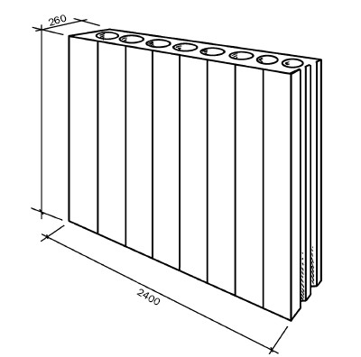
Рис. 83. Панель из пенополистирола (размеры указаны в миллиметрах)
Несъемная опалубка из древесно-стружечных плит имеет ряд существенных отличий от пенополистирольной. Стеновые панели из ДСП с определенным шагом соединяются X– и Y-образными металлическими или полимерными профилями.
Из ДСП выполнены все элементы конструкции: потолочные, специальные и др. На участках, подверженных нагрузкам, применяются ЦСП (деревянные каркасные плиты, соединенные посредством цемента).
Поскольку панели из ДСП и ЦСП применительно к данной технологии не являются утеплителями, то стеновая конструкция нуждается в теплоизоляции. Тем не менее система имеет ряд существенных положительных сторон, в частности высокую индустриальность (это означает, что конструкция предполагает автоматизированное и механизированное изготовление панелей (в условиях производства в соответствии с проектом монтируются арматура, электропроводка и коммуникации, т. е. на стройплощадке требуется только с помощью крана грузоподъемностью 1 т установить панель и забетонировать пустоты), монтаж и отделку в минимальные сроки), минимальные расходы материалов, экономию на ручном труде и общей стоимости постройки. Поскольку все технологические процессы осуществляются на предприятии, это позволяет контролировать весь процесс. Поверхность элементов опалубки такова, что не требует проведения каких-либо подготовительных работ перед финишной отделкой, которая может быть практически любой.
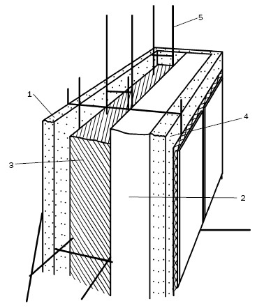
Рис. 84. Плита Velox WS: 1, 4 – щепоцементная плита; 2 – пенополистирол; 3 – бетон; 5 – арматура
В порядке информирования
В России используется и несъемная опалубка Velox (запатентована в Австрии в 1956 г.). Ее основной элемент – две щепоцементные плиты, которые изготовлены из спрессованной минерализированной еловой щепы (95 %), цемента с введением катализатора сульфата алюминия и связующего – жидкого стекла. В качестве утеплителя, который монтируется с наружной плитой, используется пенополистирол. Промежуток между панелями после монтажа заполняется бетонным раствором. Размер панелей (рис. 84): 2000 x 500 x 25 (35, 50, 75) мм.
Имея в своем составе утеплитель, несъемная опалубка Velox не требует дополнительной теплоизоляции. Благодаря минерализации плиты не горят, не подвержены процессам гниения. Структура самого материла, из которого они изготавливаются, обеспечивает оптимальный обмен, как и стены из древесины. Поэтому жить в таком доме комфортно и приятно.
В остальном опалубка Velox имеет те же достоинства, что и несъемная опалубка «ИЗОДОМ», и так же монтируется. Срок службы домов, построенных из этого материала, составляет более 100 лет.